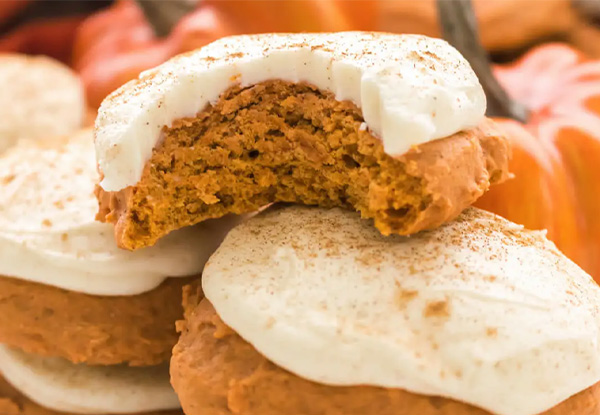

Pumpkin Cookies
Ingredients
- 2 cups all-purpose flour
- 1/2 tespoon backing soda
- 1 teaspoon baking powder
- 1/2 teaspoon ground cinnamon
- 1/2 teaspoon ground nutmeg
- 1/2 teaspoon salt
- 1 1/2 cups granulated sugar
- 1 cup crisco
- 1 cup LIBBY'S 100% Pure Pumkin
- 2 large eggs
Instructions
- Preheat oven to 375 degrees
- Combine and set aside
- Cut Crisco into pumkin and sugar
- Combine dry ingredents
- Drop on cookie sheet
- Bake 13 minutes
- Let cool and ice with Cream Cheese Frosting

Contact Me
email me!